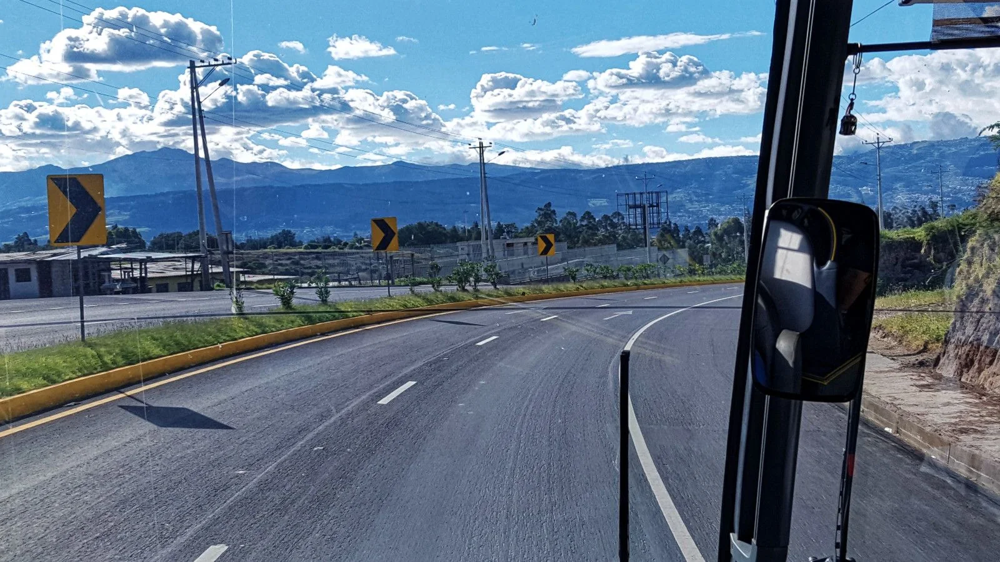
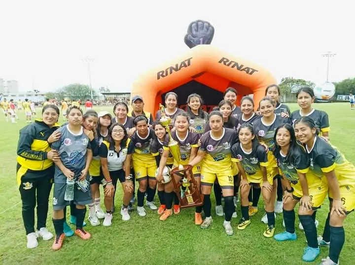
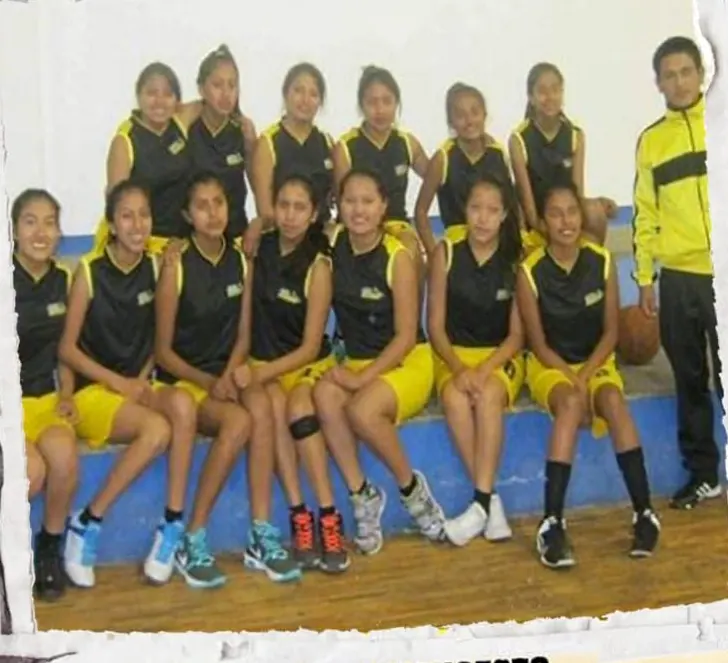
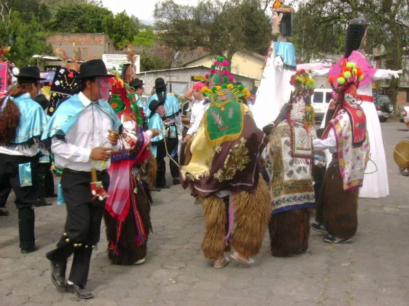
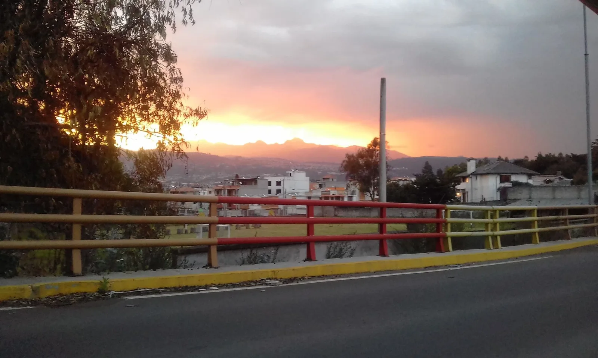

Vías y conectividad
Vías, transporte público, seguridad peatonal, alumbrado y gestión de agua potable.
Candidata a la Junta Parroquial de Alangasí
Una joven del mismo territorio, comprometida con el desarrollo de nuestra parroquia.
Soy Fernanda Morales, una joven del mismo territorio, comprometida con el desarrollo de nuestra parroquia. Mi candidatura nace del deseo de aportar con ideas, trabajo y un equipo que quiere un Alangasí mejor.
También he tenido la oportunidad de representar a Alangasí en fútbol y básquet, una parte importante de mi trayectoria y mi vínculo con la parroquia.
El deporte también ha formado parte de mi historia. He representado a nuestra parroquia en fútbol y básquet, experiencias de disciplina, compañerismo y trabajo en equipo que valoro profundamente.

Una experiencia deportiva vinculada a la representación de nuestra parroquia y al trabajo en equipo.
Imagen de archivo: publicación de Alangasí Gol, 24 de febrero de 2025.
El básquet es otra disciplina que forma parte de mi experiencia representando a Alangasí.
Imagen tomada de material de la Liga Deportiva Parroquial Alangasí sobre PIFO 2023.Toca las fotografías para ampliarlas. Fotografías de archivo deportivo compartidas para esta página. No corresponden a eventos de campaña ni implican apoyo político de los equipos o de las personas retratadas.
Consulta las propuestas, medidas y metas incluidas en el Plan de Trabajo Alangasí 2027–2031.

Vías, transporte público, seguridad peatonal, alumbrado y gestión de agua potable.

Nivelación académica, Brigada Juvenil, refuerzo escolar y cultura.

Salud preventiva, espacios comunitarios, cuidados y seguridad barrial.

Reforestación, recuperación de quebradas y reciclaje comunitario.
El plan también propone capacitación, ferias de productores, promoción turística y oportunidades de comercio local.
Síntesis del Plan de Trabajo Alangasí 2027–2031. Las acciones requieren gestión institucional, competencias y financiamiento. Los resultados futuros no están garantizados.
En el Valle de Los Chillos, Alangasí conserva tradiciones comunitarias, expresiones culturales y un entorno conectado con el Ilaló.
Descubre AlangasíDel Ilaló a nuestras tradiciones, conoce paisajes y espacios que son parte de la historia de nuestra parroquia. Explora los atractivos, descubre qué los hace especiales y encuentra motivos para visitar Alangasí.
Vistas del Valle de Los Chillos y del paisaje andino.
Esculturas y personajes que mantienen viva nuestra identidad.
Tradición termal y sabores locales para disfrutar en comunidad.
Un símbolo para descubrir la historia parroquial.
Un espacio de formación digital y aprendizaje para distintas edades.
Senderos, miradores y áreas verdes para explorar con calma.
Fotografías e información: GAD Parroquial Rural de Alangasí, reproducidas con la autorización indicada por quien gestiona esta página. Información referencial: confirma horarios, tarifas y servicios antes de visitar. Estas fotografías no son actividades de campaña.
Conoce paisajes y tradiciones de nuestra parroquia. Selecciona una fotografía para verla en detalle, sin salir de esta página.
Imágenes históricas de Wikimedia Commons, no fotografías de actos de campaña. Créditos y licencias detallados en Créditos de imágenes.
Este espacio está preparado para compartir noticias, recorridos y actividades verificadas de Fernanda Morales.
Las publicaciones aparecerán aquí cuando el equipo comparta la información oficial.
¿Qué podría mejorar en Alangasí? Comparte tu sugerencia sin dejar tus datos personales.